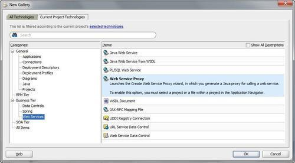
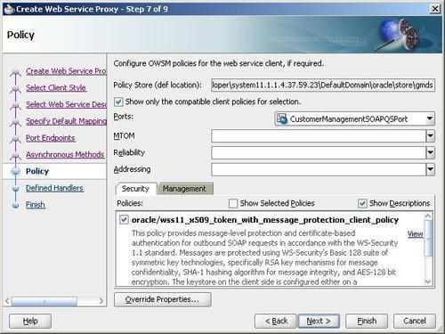
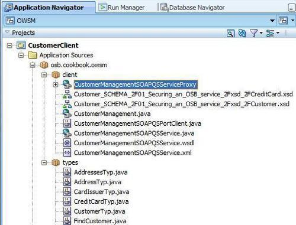
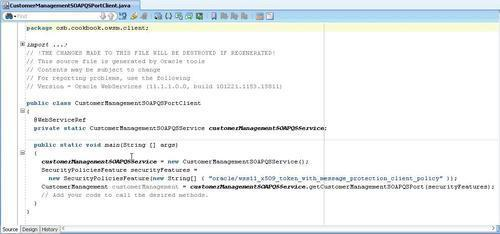
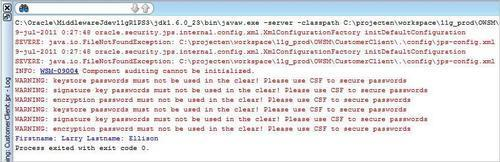

In this recipe, we will create a JDeveloper client for testing the secured OSB service created in the previous recipe. We will use the client certificate store created in the previous recipe.
For this we will need the OSB project from the previous Securing a proxy service using certificate authentication and protecting the message recipe.
The finished solution can be imported into Eclipse OEPE from \chapter-11\solution\securing-a-proxy-service-with-cert-auth-and-msg-protect.
In JDeveloper, we will create a new application workspace with a generic project. The generic project will be used to generate a web service proxy based on the WSDL of the customer proxy service.
In JDeveloper, perform the following steps:
OWSM into the Application Name field. workspace folder. osb.cookbook.owsm into the Application Package Prefix field and click Next.A new JDeveloper application with an empty project has been generated. Now let's create a consumer of the web service as a Java class. Still in JDeveloper, perform the following steps:

http://localhost:7001/securing-a-proxy-service-with-cert-auth-and-msg-protect/proxy/CustomerManagement?wsdl osb.cookbook.owsm.client into the Package Name field and osb.cookbook.owsm.types into the Root Package for Generated Types field.


Map<String, Object> reqContext = ((BindingProvider) customerManagement).getRequestContext(); reqContext.put(ClientConstants.WSSEC_KEYSTORE_TYPE, "JKS"); reqContext.put(ClientConstants.WSSEC_KEYSTORE_LOCATION, "c:/client_2.jks"); reqContext.put(ClientConstants.WSSEC_KEYSTORE_PASSWORD, "welcome"); reqContext.put(ClientConstants.WSSEC_ENC_KEY_ALIAS, "serverKey"); reqContext.put(ClientConstants.WSSEC_ENC_KEY_PASSWORD, "welcome"); reqContext.put(ClientConstants.WSSEC_RECIPIENT_KEY_ALIAS, "serverKey"); reqContext.put(ClientConstants.WSSEC_SIG_KEY_ALIAS, "clientKey"); reqContext.put(ClientConstants.WSSEC_SIG_KEY_PASSWORD, "welcome"); // call the operation. CustomerTyp customer = customerManagement.findCustomer(10L); System.out.println( "Firstname: "+customer.getFirstName() +" Lastname: "+customer.getLastName());

We will get some file not found exceptions but we can ignore this because we are testing this from a Java client and not from a WebLogic server.
The last blue line is the result of the findCustomer operation of the CustomerManagement proxy service. We can see that the authentication worked!
The Web Service Proxy wizard generates a set of Java classes necessary to invoke the secured OSB service. The classes are created based on the WSDL retrieved from the proxy service. Because of the server policy definition, JDeveloper knows what client policy to use. As a developer, all we need to do is set up the request context map with the corresponding credential information.
The following two sections show the necessary changes in the code to test the proxy service with the Username Token authentication and with the message protection.
To generate a JDeveloper test client for testing the Username Token authentication, the same steps 1 17 from this recipe have to be executed. Just replace the URL of the WSDL in step 9 with the one from the Username Token authentication recipe: http://localhost:7001/securing-a-proxy-service-with-username-token/proxy/CustomerManagement/proxy/CustomerManagement?wsdl
This WSDL will automatically show the right corresponding client-side policy in step 13 and in step 18, the following code block has to be used instead.
// Add the user Map<String, Object> reqContext = ((BindingProvider) customerManagement).getRequestContext(); reqContext.put(BindingProvider.USERNAME_PROPERTY, "osbbook" ); reqContext.put(BindingProvider.PASSWORD_PROPERTY, "welcome1" ); // call the operation. CustomerTyp customer = customerManagement.findCustomer(10L); System.out.println( "Firstname: "+customer.getFirstName() +" Lastname: "+customer.getLastName());
To generate a JDeveloper test client for testing the Username Token authentication, the same steps 1 17 from this recipe have to be executed. Just replace the URL of the WSDL in step 9 with the one from the Username Token authentication recipe: http://localhost:7001/securing-a-proxy-service-with-message-protection/proxy/CustomerManagement/proxy/CustomerManagement?wsdl
This WSDL will automatically show the right corresponding client-side policy in step 13 and in step 18, the following code block has to be used instead.
// Add the user Map<String, Object> reqContext = ((BindingProvider) customerManagement).getRequestContext(); // message protection reqContext.put(ClientConstants.WSSEC_KEYSTORE_TYPE, "JKS"); reqContext.put(ClientConstants.WSSEC_KEYSTORE_LOCATION, "c:/client_1.jks"); reqContext.put(ClientConstants.WSSEC_KEYSTORE_PASSWORD, "welcome"); reqContext.put(ClientConstants.WSSEC_ENC_KEY_ALIAS, "serverKey"); reqContext.put(ClientConstants.WSSEC_ENC_KEY_PASSWORD, "welcome"); reqContext.put(ClientConstants.WSSEC_RECIPIENT_KEY_ALIAS, "serverKey"); JDevelopertest client implementing, for service// call the operation. CustomerTyp customer = customerManagement.findCustomer(10L); System.out.println( "Firstname: "+customer.getFirstName() +" Lastname: "+customer.getLastName());